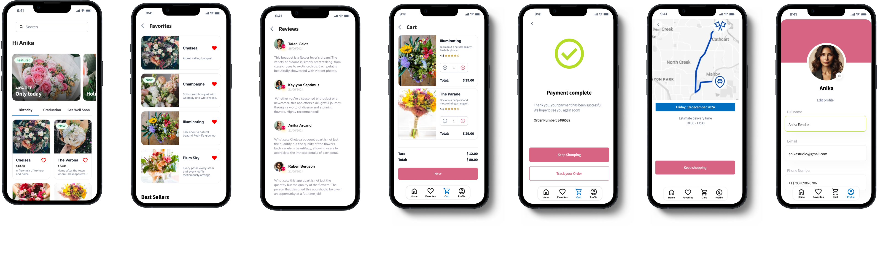

Spirit Airlines
Smoother Skies: Improving Spirit Airlines’ Digital Experience for Hassle-Free Travel.

YEAR 2025
My Role
UX/UI Designer
Timeline
2 months
Team
- 1 Project Onwer
- 1 Scrum Master
- 4 Developers
- 1 Design lead
- 1 UX/UI Designer
Process
Desk research, competitive analysis, survey, interview, heuristic analysis, JTBD, HMW, Impact vs benefit matrix, MoSCoW method, Card sorting, hypothesis statement, journey map, moodboard, crazy 8's wireframing, user testing, A/B testing.
Tools
Figma, Maze, Kasort, Meet
Overview
Spirit Airlines aims to provide affordable air travel with a user-friendly digital experience. While the app performs reasonably well, there are opportunities for improvement, particularly in areas like flight selection, fee transparency, and personalization. Addressing these aspects could further enhance customer satisfaction and trip planning efficiency.
This case study aims to enhance Spirit Airlines’ booking experience by creating a seamless, user-friendly journey from flight selection to payment. By focusing on clarity, accessibility, and transparency, the overhaul addresses common user pain points and aligns with business goals of increasing conversions, reducing customer service queries, and fostering loyalty. The result will be a streamlined process balancing affordability with convenience, boosting customer satisfaction and operational success.
Understanding the problem
To truly understand what users experience, I conducted in-depth research using multiple methods:
Key insights:
30%
Struggle to to locate certain options or features on an Airline platform.
50%
Find it kinda challenge to find a flight that fit their schedule and budget.
30%
Find it somewhat unclear pricing details when booking a flight.
Defining the solution
Armed with research, I synthesized findings using: Heuristic Analysis, JTBD and HMW Statements.
How might we improve Spirit Airlines’ booking experience to increase conversions while maintaining the affordability that defines the brand?
To prioritize improvements, I used:
- Imapct vs. Benefit Matrix to focus on the high-value, low effort fixes first.
- MoSCoW Method to define must-haves vs. nice-tohave features


Hypothesis Statements
I wanted to ground my ideas in evidence and ensure my approach is measurable. Here some of them:
Hypothesis
We believe that enhancig fee transparency by clearly displaying all costs upfront will result in greater trust and fewer booking drop-off because we know hidden fees are a significant deterrent, and users are more likely to complete purchases when they feel informed and in control.
Desk Research
Additional fees were also a through-line among reviews particularly for seat selection, baggage and personal items making the cost much higher than anticipated.
Metrics
Booking Drop-offs: Track the drop-off rate during the booking process to see if it decreases. Completion Rate: Measure the increase in completed bookings.
Hypothesis
We believe that highlighting key information in search results based on user priorities will result in improve decision-making efficiency because users often face high cognitive load of information and benefit from being able to identify essential details at a glance..
User Interview
“I mainly look for price, flight duration, and layovers. if your app can highlight the best options based on these criteria right from the start, it would streamline my decision-making process."
Metrics
Click-Through Rate (CTR): Measure the CTR for search results to see if users are engaging with highlighted information.
Structuring the experience
Creating a CJM provides insights into the user's journey with the product, helping identify pain points, areas for improvement, and opportunities to enhance the overall user experience. I also include the front-door experience in my CJM to analyze the crucial entry points where users first interact with the product, ensuring their initial impressions are seamless, engaging, and set the stage for the rest of their journey.
Scenario Context
Ann Gullar, has been planning to visit her family in Miami for her mother's birthday next month. As a young professional on a tight budget, she's heard about Spirit Airlines' low-cost options but is cautious about additional fees. She decides to book her flight using the mobile app during her lunch break.
Delivering Value
The design solution simplifies Spirit Airlines’ booking by clarifying fee structures, highlighting key information in search results, and ensuring users can easily find answers and support within the app, improving trust and usability.
Testing & Validation
To ensure the redesign met user needs, I conducted:
Usability Testing
xxxxx
A/B Testing Plan:
Problem statement 🔎
Does highlighting key information reduce the time users take to complete a booking?
Can users recall the key details of their booking (e.g., flight time, baggage) without revisiting previous steps?
Data 📊
30% Struggle to to locate certain options or features on an Airline platform.
Hypothesis 💡
We believe that implementing a new design for the flight selection interface will make the booking process faster, reduce cognitive load, and lead to a higher completion rate.
Risk and Mitigation 📈
Risk: There wont be a wide enough variety of issues for the users testing the app to get meaningful data for all features.
Mitigation: Increase the data sample to something larger in order to attempt to capture more scenarios but within the allocated budget.
Metric 📈
Analyzing that the results are statistics significant:
By ensure that my P-value is below 0.05. There is a less than 5% chance that the null hypothesis is true.
Target Users 🎯
Primary Target Audience: Users looking to book domestic flights, which represents Spirit Airlines’ main customer base.
Secondary Target Audience: New users visiting the Spirit Airlines website or app for the first time, to assess how the redesigned interface impacts initial impressions and conversions.